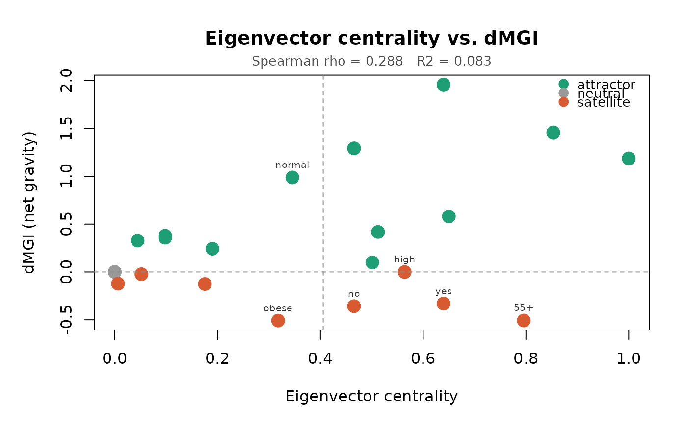

Plots eigenvector centrality on the x-axis against net gravity (dMGI) on the y-axis for all modality nodes. Points are coloured by role (attractor/satellite/neutral) and contradiction cases - nodes where the two metrics disagree most strongly - are automatically labelled. The Spearman correlation is annotated in the plot margin.
Usage
plot_gravity_scatter(
x,
catmodgraph,
label_threshold = 0.25,
attractor_col = "#1D9E75",
satellite_col = "#D85A30",
neutral_col = "grey60",
point_size = 1.8
)Arguments
- x
A data frame returned by
modality_gravity.- catmodgraph
A
catmodgraphobject matchingx. Used to compute eigenvector centrality if not already present as a column inx.- label_threshold
Numeric in \[0, 1\]. Modalities are labelled if their eigenvector centrality exceeds this value and they are satellites, OR if their
delta_mgiexceeds the 75th percentile and their eigenvector is below the median. Default0.25.- attractor_col
Colour for attractor nodes. Default
"#1D9E75".- satellite_col
Colour for satellite nodes. Default
"#D85A30".- neutral_col
Colour for neutral nodes. Default
"grey60".- point_size
Numeric. Base point size. Default
1.8.
Value
Invisibly returns a data frame with columns node,
eigenvec, delta_mgi, role, and
is_contradiction.
Details
This plot is the primary diagnostic for demonstrating that MGI captures structural information not contained in standard centrality indices.
Examples
data(survey_health)
mg <- build_modality_graph(survey_health)
mg <- prune_modality_edges(mg, min_weight = 0.10, max_p = 0.05)
grav <- modality_gravity(mg)
plot_gravity_scatter(grav, mg)
